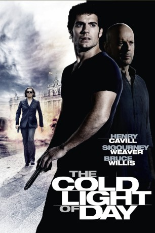

#11062 The Cold Light of Day
 
 IMDB-Wertung: 4.9 / 10
IMDB-Wertung: 4.9 / 10  Metascore: 22
Metascore: 22 
Darauf hat sich die ganze Familie gefreut: Die Shaws sind aus den USA angereist, um einen gemeinsamen Segeltörn vor Spaniens Küste zu unternehmen. Doch was wie ein Traumurlaub beginnt, wird rasch zum lebensgefährlichen Albtraum, als Sohn Will nach einem Landausflug auf die gemietete Segelyacht zurückkehrt und statt seiner Familie nur Blutspuren und Indizien für einen Kampf vorfindet. Will wendet sich an die örtliche Polizei. Doch diese scheint in die Sache verstrickt zu sein. Plötzlich taucht wie aus dem Nichts sein Vater Martin auf. Will erfährt, dass sein Vater seit vielen Jahren ein Doppelleben führt …
Jahr: 2012
Dauer: 93 Minuten
FSK: 16
Land: USA Studio: Summit EntertainmentTonspuren: DTS - ,
Untertitel: Deutsch,
Auflösung: 1080p (1920x816) Größe: 8202 MB
Genre: Action, Thriller
Regisseur: Mabrouk El Mechri
Drehbuch: Scott Wiper, John Petro
Soundtrack: Lucas Vidal
Darsteller:
 Henry Cavill als Will
Henry Cavill als Will- Verónica Echegui als Lucia
 Bruce Willis als Martin
Bruce Willis als Martin Sigourney Weaver als Carrack
Sigourney Weaver als Carrack Joseph Mawle als Gorman
Joseph Mawle als Gorman Caroline Goodall als Laurie
Caroline Goodall als Laurie Rafi Gavron als Josh
Rafi Gavron als Josh- Emma Hamilton als Dara
- Michael Budd als Esmael
 Roschdy Zem als Zahir
Roschdy Zem als Zahir Óscar Jaenada als Maximo
Óscar Jaenada als Maximo- Joe Dixon als Dixon
 Jim Piddock als Meckler
Jim Piddock als Meckler- Fermí Reixach als Carlos
- Paloma Bloyd als Christina
 Simón Andreu als Pizarro
Simón Andreu als Pizarro- Morgan Johnson als Habib
 Andrea Ros als SP. College Girl
Andrea Ros als SP. College Girl Colm Meaney als Bandler
Colm Meaney als Bandler- Laura Bayonas als (uncredited)
- Javier Pinto als Airport Customer (uncredited)
- Paula Soldevila als (uncredited)
- Alex Spijksma als Airport Customer (uncredited)
- Lolo Herrero als Reynaldo
- Luiggi López als Puerto Serena Fisherman
- Alex Amaral als Cesar
- Mark Ullod als Vicente
- Borja Chantres als Bus Driver
- Karli Gavaldá als Young Cop
- José Alias als Garbage Man
- Sílvia Sabaté als Mother at Pharmacy
- David Hernández Silva als Army Soldier (uncredited)
- José Antonio Romero als Man Involved in Gunfire (uncredited)
Datei: X:\2012(A-F)\Cold Light of Day, The (2012, FSK16, 1920x816).mkv seit 24.04.2019
Festplatte: HD 2012(A-M)
 Es gibt insgesamt 102 Filme in der Gruppe '2012(A-F)'
Es gibt insgesamt 102 Filme in der Gruppe '2012(A-F)'